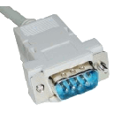

ITango 8.1.1 -- An interactive Tango client.
Running on top of Python 2.6.6, IPython 1.1 and PyTango 8.1.1
ITango [1]: serial_line = Serial("pc01/tty/1")
ITango [2]: serial_line
Result [2]:
|
 |
Name: |
pc01/tty/1 |
|
Alias: |
----- | |
|
Database: |
bcu01ctrl.esrf.fr:10000 | |
|
Type: |
Serial | |
|
Server: |
Serial/pc01 | |
|
Server host: |
pc01.esrf.fr | |
|
Documentation: |
ITango [3]: